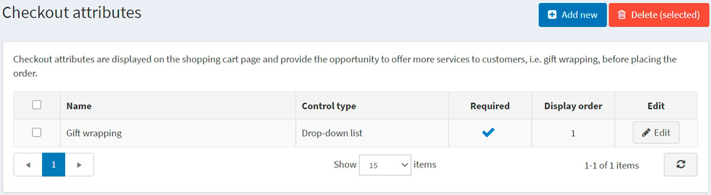
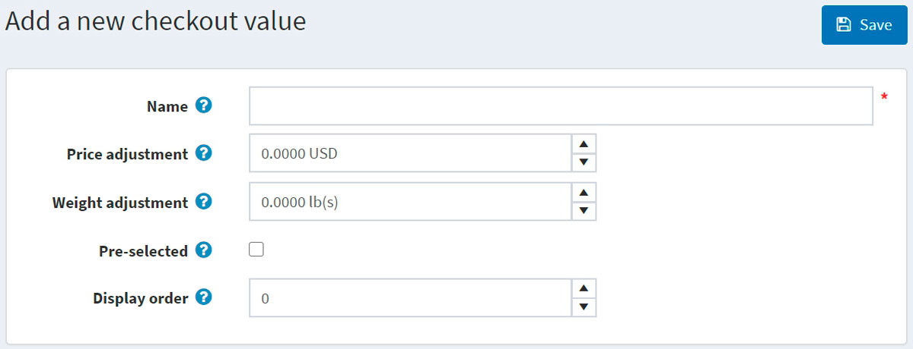
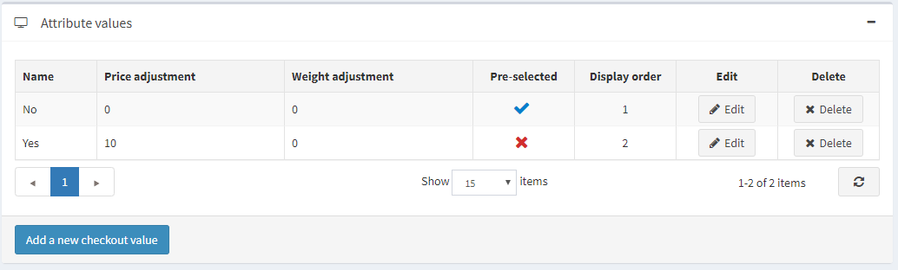

Checkout attributes
Checkout attributes represent additional order information that is gathered during the final stage of the shopping process.
Tip
Using the checkout attributes, shop owners can specify, for example, whether a bought product requires gift wrapping or careful handling, as in the case of fragile goods.
Checkout attributes are displayed on the shopping cart page and enable users to select them, if required, before the checkout.
To set up or edit checkout attributes, go to Catalog → Attributes → Checkout attributes.

You can select checkout attributes and click the Delete (selected) button to delete them.
Add a new checkout attribute
To create a new checkout attribute, click Add new. The Add a new checkout attribute window will be displayed as follows:

This page is available in two modes: advanced and basic. Switch to the basic mode, which only displays the main fields, or use the advanced mode displaying all the available fields.
In the Attribute info panel, define the following information:
Name — the attribute name.
Text prompt — a question or a comment that will be displayed in the checkout area on the shopping cart page.
From the Control type dropdown list, select the required method for displaying the attribute value, such as Dropdown list, Radio button list, Checkboxes, Textbox.
Note
Dropdown lists, radio lists, checkboxes and color squares require the store owner to define values (such as Green, Blue, Red, and more). Textbox and Date picker control types do not require the store owner to define values since customers will be requested to fill these textbox fields. In addition, for some control types, you can specify validation rules. For example, for the Textbox attribute, you can define the Minimum length, Maximum length, and Default value. For the File upload attribute, you can define the Allowed file extension and Maximum file size (KB).
Select the Required checkbox if selecting an attribute value is required before completing the purchasing process.
Display order — display order number of the checkout attribute.
Select the Shippable product required checkbox in case this attribute should only be displayed for the product that needs to be shipped.
Selected Tax exempt checkbox indicates that no tax will be applied to this checkout attribute.
In the case a tax is applied, from the Tax category dropdown list, select the checkout attribute tax category.
Limited to stores enables you to limit the attribute to one or more stores.
Note
In order to use this functionality, you have to disable the following setting: Catalog settings → Ignore "limit per store" rules (sitewide). Read more about multi-store functionality here.
Click Save and continue edit to proceed to the Attribute values panel (if applicable).
Add a new checkout attribute value
In the Attribute values panel, click Add a new checkout attribute value to create a new attribute value.

In the Add a new checkout attribute value window, define the following information:
Name — the attribute value name.
Tip
For example, Yes or No, for such questions as "Do you require fragile care handling"?
Price adjustment will add the entered amount to a total purchase sum in case the attribute value is selected.
Weight adjustment will change an order weight by the entered amount in case the attribute value is selected.
Select the Pre-selected checkbox to indicate the attribute value is preselected for a customer.
Display order — display order number of the attribute value.
You can Edit and Delete attribute values by clicking the corresponding buttons beside the attributes in the Attribute values panel.

Add a condition
In the Condition panel, a store owner can specify a condition for the checkout attribute to be visible (depending on other attributes). A conditional attribute only appears if the previous attribute is selected.

Click Save. The new attribute will be displayed on the shopping cart page in the public store.